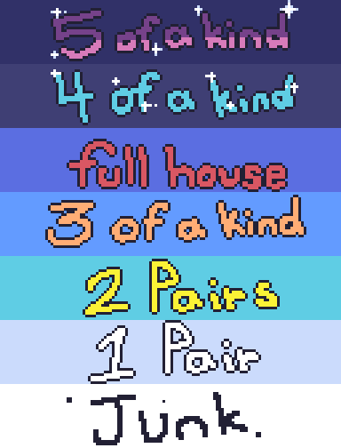
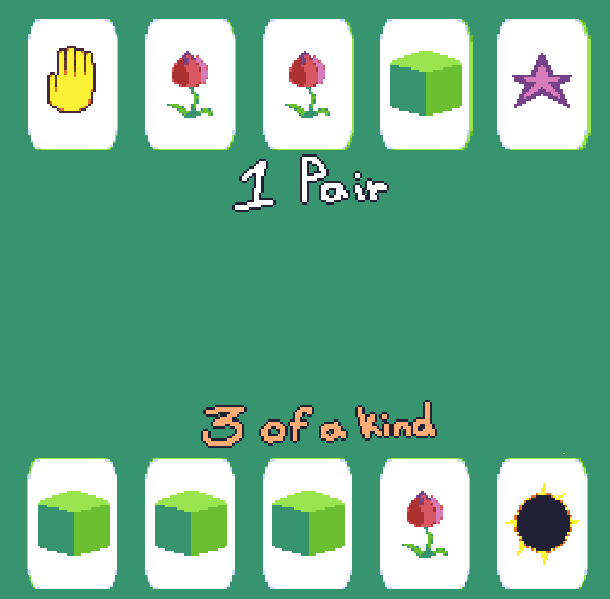

|
This game is picture poker! After pressing play, you will receive a randomized deck with 6 possible card types. The goal of the game is to get a better hand than your opponent. If you get a deck you aren't satified with, you have one chance to select whichever cards you want to trade using the number keys on your keyboard! Whichever cards you are trading will be labeled with a yellow arrow! You can also unselect a selected card by pressing the number key a second time! Once you're happy with your deck, you can press SPACE to get your new cards, (if you decided to trade), and see if you've won against your opponent! |
|---|---|
 |
Here's all the kinds of hands you can earn! 5 of a kind is the best hand you can possibly get in this game, meaning you got 5 of the exact same card. And if all of your cards are different, then you'll get the lowest hand, Junk. A low hand doesn't always mean you lose though! As long as you have a better hand than your opponent, you win the game! |
 |
In this case, I got 3 of a kind and my opponent got 1 of a kind which is 2 levels lower than my hand, meaning I win! When the round is over, just press the R key and you can play again! Have fun! |